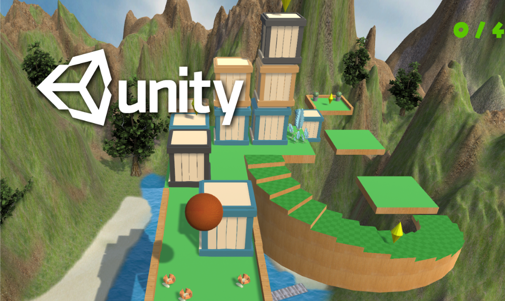
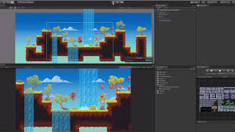
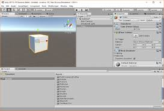
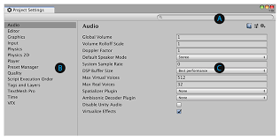

We love to make video games, so we are going to make this a possiblility. After downloading Unity, we are going to take a look inside this machine. We can change settings, or even game types while creating them. Get Excited!!
So, after you have downloaded Unity it should open automaticly. From there you can create your first project. In this tutorial we are going to create a 3D game. So, give the project a name, like, firstProject, and select 3D. Unity should do everything for you, but if you are having trouble, look up a tutorial online.
You may feel overwelmed when you open up Unity, but don't worry. There is a lot going on, but you don't need to memorize everything right now. In fact, we only need to look at certian things for this project and we can ignore the other parts for now.
Unity is amazing beacuse you can switch from 3D to 2D with just a click. This can help to get a different angle or if you want to switch game types while making the game.
There are a lot of settings, so if you want to switch things up, you should go in and test some things out. I like the default settings, and that is what we are going to be using in this tutorial.
